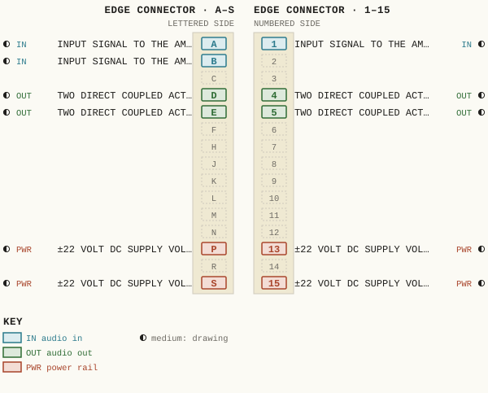
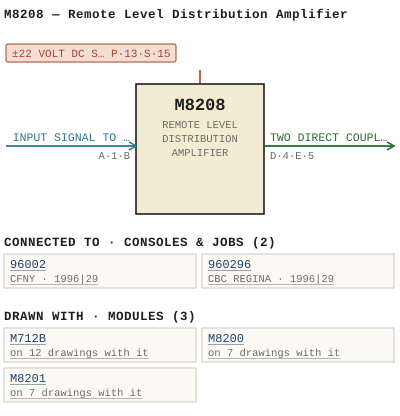

M8208 — Remote Level Distribution Amplifier
| Type | module |
| Category | AMPLIFIERS |
| Try it | simulator & front panel · download package (zip) |
| Earliest dated evidence | 1995|28 — manual issue date |
| Evidence | "Issue #1 March 30, 1995" in WBSps Engineering from H drive-20261018T013433Z-1-001/WBSps Engineering from H drive/WBSps - Word Perfect Manuals/M8208.WP |
| Confidence | high |
| All years found | 1995|28 |
| Used in jobs | 96002 (1996|29), 960296 (1996|29) |
| Folder | Consoles/1990-1999/96002 - CFNY |
| Folder | Consoles/1990-1999/96017 |
| Folder | Consoles/1990-1999/960296 - CBC REGINA |
Connections
What it is made of and what it is part of.
Pictures


M8208.pinout.svg

M8208.connections.svg 1995 - M8208 - REMOTE LEVEL AMPLIFIER 001.jpg
1995 - M8208 - REMOTE LEVEL AMPLIFIER 001.jpg 1995 - M8208 - REMOTE LEVEL AMPLIFIER 002.jpg
1995 - M8208 - REMOTE LEVEL AMPLIFIER 002.jpg 1995 - M8208 - REMOTE LEVEL AMPLIFIER 003.jpg
1995 - M8208 - REMOTE LEVEL AMPLIFIER 003.jpg 1996 - 96002 - DOC - Scan_20210323 (3).jpg
1996 - 96002 - DOC - Scan_20210323 (3).jpg 1996 - 96017 - DOC - 96017-01-001 - ISSUEI REMSION.jpg
1996 - 96017 - DOC - 96017-01-001 - ISSUEI REMSION.jpg 1996 - 960296 - DOC - 2021-3-16-23-22-21.jpg
1996 - 960296 - DOC - 2021-3-16-23-22-21.jpg 1996 - 96002-01-003 - CFNY TURRET INTERFACE - ISS 1.jpg
1996 - 96002-01-003 - CFNY TURRET INTERFACE - ISS 1.jpg 1996 - 960296-01-001 - CBC REGINA CENTRAL ELECTRONICS FUNCTIONAL - DRN DRG - ISS 1.jpg
1996 - 960296-01-001 - CBC REGINA CENTRAL ELECTRONICS FUNCTIONAL - DRN DRG - ISS 1.jpgPinout & connections
Each contact as its own documents name it: 11 named (11 medium confidence). An empty slot is a contact no page names. Hover a contact for its source; the table under the drawing lists them.
pinout (SVG) · connections (SVG) · pins (JSON)
Pin evidence — 11 contacts
| Pin | Signal | Kind | Confidence | Read from | Source |
|---|---|---|---|---|---|
| A | INPUT SIGNAL TO THE AMPLIFIER | audio in | medium | prose | 1995 - M8208 - 8208-02-001 - COMPONENT LAYOUT…, p. 1 “Input The input signal to the amplifier is applied at connector pins 1 and A, and the input shield to pin B.” |
| 1 | INPUT SIGNAL TO THE AMPLIFIER | audio in | medium | prose | 1995 - M8208 - 8208-02-001 - COMPONENT LAYOUT…, p. 1 “Input The input signal to the amplifier is applied at connector pins 1 and A, and the input shield to pin B.” |
| B | INPUT SIGNAL TO THE AMPLIFIER | audio in | medium | prose | 1995 - M8208 - 8208-02-001 - COMPONENT LAYOUT…, p. 1 “Input The input signal to the amplifier is applied at connector pins 1 and A, and the input shield to pin B.” |
| D | TWO DIRECT COUPLED ACTIVELY BALANCED OUTPUTS | audio out | medium | prose | 1995 - M8208 - 8208-02-001 - COMPONENT LAYOUT…, p. 1 “Two direct coupled actively balanced outputs are provided at module connector pins 4 & D and 5 & E; output 1 and output 2 respectively.” |
| 4 | TWO DIRECT COUPLED ACTIVELY BALANCED OUTPUTS | audio out | medium | prose | 1995 - M8208 - 8208-02-001 - COMPONENT LAYOUT…, p. 1 “Two direct coupled actively balanced outputs are provided at module connector pins 4 & D and 5 & E; output 1 and output 2 respectively.” |
| E | TWO DIRECT COUPLED ACTIVELY BALANCED OUTPUTS | audio out | medium | prose | 1995 - M8208 - 8208-02-001 - COMPONENT LAYOUT…, p. 1 “Two direct coupled actively balanced outputs are provided at module connector pins 4 & D and 5 & E; output 1 and output 2 respectively.” |
| 5 | TWO DIRECT COUPLED ACTIVELY BALANCED OUTPUTS | audio out | medium | prose | 1995 - M8208 - 8208-02-001 - COMPONENT LAYOUT…, p. 1 “Two direct coupled actively balanced outputs are provided at module connector pins 4 & D and 5 & E; output 1 and output 2 respectively.” |
| P | ±22 VOLT DC SUPPLY VOLTAGE | power rail | medium | prose | 1995 - M8208 - 8208-02-001 - COMPONENT LAYOUT…, p. 1 “Power Supply Decoupling The ±22 volt DC supply voltage appearing at amplifier connector pins 15 & S and 13 & P are isolated from the amplif…” |
| 13 | ±22 VOLT DC SUPPLY VOLTAGE | power rail | medium | prose | 1995 - M8208 - 8208-02-001 - COMPONENT LAYOUT…, p. 1 “Power Supply Decoupling The ±22 volt DC supply voltage appearing at amplifier connector pins 15 & S and 13 & P are isolated from the amplif…” |
| S | ±22 VOLT DC SUPPLY VOLTAGE | power rail | medium | prose | 1995 - M8208 - 8208-02-001 - COMPONENT LAYOUT…, p. 1 “Power Supply Decoupling The ±22 volt DC supply voltage appearing at amplifier connector pins 15 & S and 13 & P are isolated from the amplif…” |
| 15 | ±22 VOLT DC SUPPLY VOLTAGE | power rail | medium | prose | 1995 - M8208 - 8208-02-001 - COMPONENT LAYOUT…, p. 1 “Power Supply Decoupling The ±22 volt DC supply voltage appearing at amplifier connector pins 15 & S and 13 & P are isolated from the amplif…” |
Dates found in the documents
| Year | Kind | Text | File |
|---|---|---|---|
| 1995|28 | manual issue date | Issue #1 March 30, 1995 |
1995 - M8208 - 8208-02-001 - COMPONENT LAYOUT.wp |
Documents (1)
| Year | File | |
|---|---|---|
| 1995|28 | 1995 - M8208 - 8208-02-001 - COMPONENT LAYOUT.wp | note |
Photos & scans (16)


Parts list — board M8208 (40 parts)
From M8208.WP; also in timelines/data/bom.csv.
| Ref | Part | Value | Manufacturer | Mfr part no. |
|---|---|---|---|---|
| C1 | Capacitor | SOT | ||
| C40 | Capacitor | 10 uF/25 V | ITT | 10M25 |
| CR1-CR5 | Diode | Motrola | 1N4148 | |
| DS1 | delete | |||
| DS2 | delete | |||
| Q1 | delete | |||
| Q2 | delete | |||
| Q3 | delete | |||
| Q4 | delete | |||
| Q5 | Transistor, NPN | National | 2N3906 | |
| R1 | Resistor | 1/4W 1% | 16K2 | Philips MRS25F |
| R6 | Potentiometer | 5K | Piher | PT10V-5K |
| R7 | Resistor | 1/4W 1% | 75 | Philips MRS25F |
| R13 | Potentiometer | 5K | Piher | PT10H-5K |
| R14 | Resistor | 1/4W 5% | 13K | Philips CR25 |
| R16 | Potentiometer | 20K | Piher | PT10V-20K |
| R18 | Resistor | 1/4W 5% | 240K | Philips CR25 |
| R26 | Resistor | 1/4W 1% | 75 | Philips MRS25F |
| R28 | delete | |||
| R29 | Potentiometer | delete | ||
| R31 | Resistor | 1/4W 1% | 4K75 | Philips MRS25F |
| R37 | delete | |||
| R39 | delete | |||
| R41 | delete | |||
| R51 | delete | |||
| R52 | delete | |||
| R53 | delete | |||
| R54 | delete | |||
| R55 | delete | |||
| R56 | delete | |||
| R57 | delete | |||
| R58 | Potentiometer | delete | ||
| R59 | delete | |||
| R60 | Resistor | 1/2W 5% | 6.8 | Philips SFR25 HJ |
| R66 | Resistor | 1/4W 5% | 56K | Philips CR25 |
| U1 | Integrated Circuit | National | LM833N | |
| LK1 | Connector, 2P PCB MTG | Berg | 65645-202 | |
| LK2 | Connector, 2P | Aptronics | 929955-06 | |
| U1-U5 | 8 Pin Socket | Amp | 640463-3 | |
| U6 | 14 Pin Socket | " | 640357-3 |
Consoles & jobs it is connected to (2)
Their own drawings name this module.
| Job | Year | Drawing | Page |
|---|---|---|---|
| 96002 | 1996|29 | 1996 - 96002-01-003 - CFNY TURRET INTERFACE - ISS 1.jpg | 1 |
| 960296 | 1996|29 | 1996 - 960296-01-001 - CBC REGINA CENTRAL ELECTRONICS FUNCTIONAL - DRN DRG - ISS 1.jpg | 1 |
Named in other drawings & documents (7)
Drawings (1)
Each scan with its trace laid over it: the slider runs from the scan to the vector drawing. Click one to see it large and save it as SVG, DXF, KiCad, PDF or PowerPoint.
Issuei Remsionviewer
Read from the drawing title blocks.
| Drawing | Title | Date | Drawn by | Checked by | Iss. | Source |
|---|---|---|---|---|---|---|
| 96017-01-001 | Issuei Remsion | DRG | I | file |